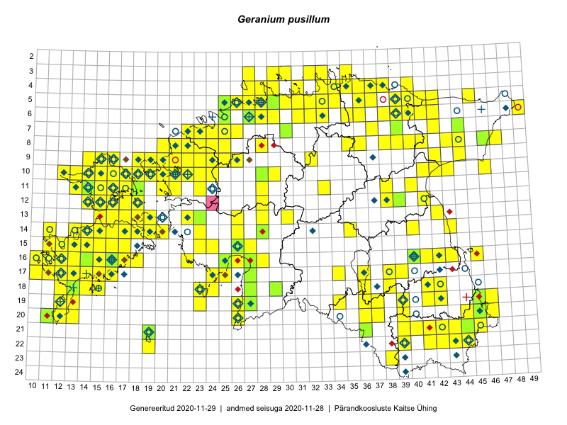

Geranium pusillum
Uuendatud: 2016-12-02
Kaardile koondatud taksonid: Geranium pusillum L.

Kaart põhineb 294 kirjel, neist vaatlusi 292 ja eksemplare 2. Taksonit on leitud 202 ruudust.
Kuvatud viited 20 esimesele andmebaasikirjele, ülejäänud PlutoFis
- Tiit Hallikma, Toomas Kukk, Indrek Tammekänd: 2015-06-09: 12-28: ala
- Toomas Kukk, Thea Kull, Timo Luhamäe, Ott Luuk, Peedu Saar: 2015-06-29: 14-17: ala
- Peedu Saar, Liina Oja: 2015-05-20: 18-27: ala
- Peedu Saar, Toomas Kukk: 2015-05-28: 11-17: ala
- Peedu Saar, Toomas Kukk: 2015-05-27: 09-14: ala
- Peedu Saar, Toomas Kukk: 2015-05-27: 09-15: ala
- Peedu Saar, Toomas Kukk: 2015-05-27: 09-16: ala
- Toomas Kukk, Eerik Leibak: 2015-08-09: 14-15: ala
- Toomas Kukk, Thea Kull, Timo Luhamäe, Ott Luuk, Peedu Saar: 2015-06-28: 13-26: ala
- Peedu Saar, Toomas Kukk: 2015-05-26: 10-16: ala
- Peedu Saar, Toomas Kukk: 2015-05-26: 10-17: ala
- Ott Luuk, Toomas Kukk, Thea Kull, Peedu Saar, Timo Luhamäe: 2015-06-25: 10-28: ala
- Peedu Saar, Eerik Leibak: 2015-07-30: 16-41: ala
- Peedu Saar, Sander Laherand: 2015-06-01: 07-42: ala
- Peedu Saar, Sander Laherand: 2015-06-01: 06-41: ala
- Peedu Saar, Liina Oja: 2015-07-20: 08-44: ala
- Toomas Kukk, Tiit Hallikma: 2015-07-24: 06-41: ala
- Malle Leht: 2015-07-28: : ala
- Toomas Kukk: 2014-06-21: 16-10: ala
- Tiit Hallikma, Toomas Kukk: 2015-06-11: 10-29: ala